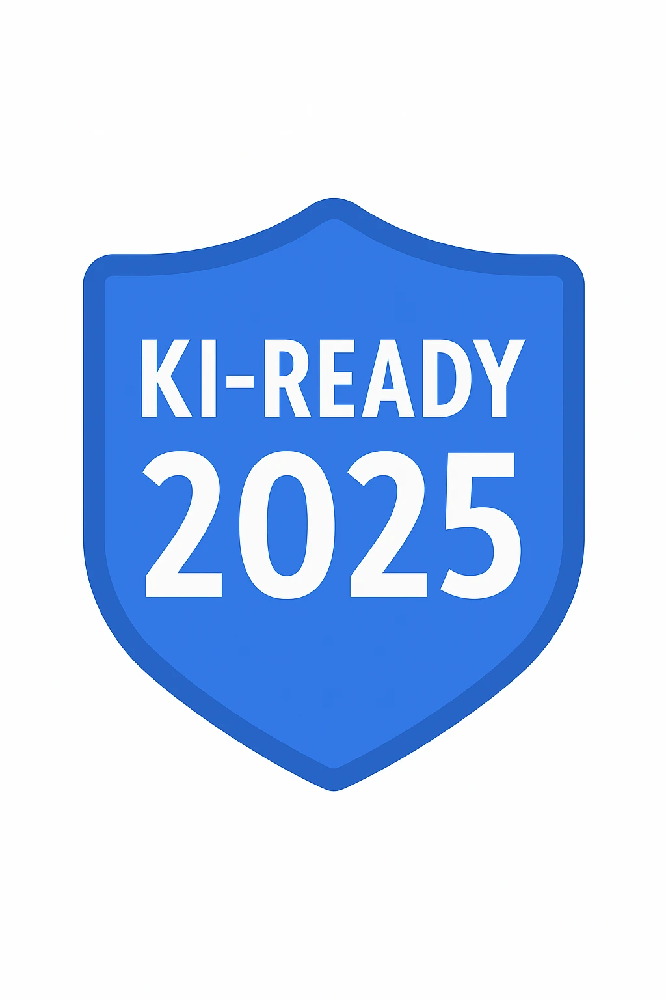
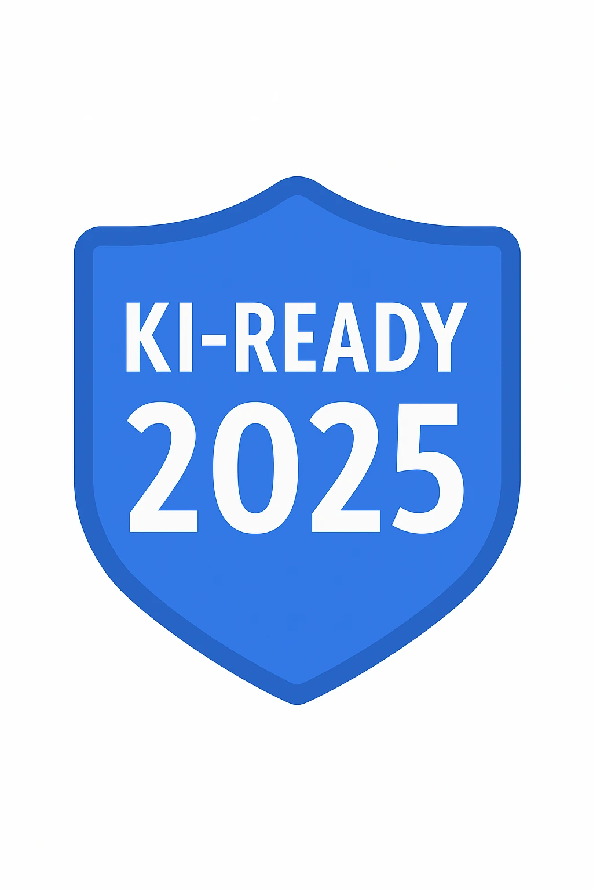

KI-Readiness-Report
2025
Zukunftssichere KI-Strategie für Unternehmen
Seite 1
Executive Summary
{{ executive_summary | safe }}
Seite 3
Kurzfazit
{% if summary_klein %}
Kleine Unternehmen: {{ summary_klein | safe }}
{% endif %}
{% if summary_kmu %}
KMU: {{ summary_kmu | safe }}
{% endif %}
{% if summary_solo %}
Solo-Unternehmen: {{ summary_solo | safe }}
{% endif %}
Seite 4
Gesamtstrategie & Roadmap
{{ gesamtstrategie | safe }}
{{ roadmap | safe }}
Seite 5
Förderprogramme
{{ foerderprogramme | safe }}
{% if foerdermittel %}
{{ foerdermittel | safe }}
{% endif %}
Seite 7
Praxisbeispiele
{{ praxisbeispiele | safe }}
Seite 9
Vision & Zukunftsausblick
{{ moonshot_vision | safe }}
{% if eu_ai_act %}
EU AI Act: {{ eu_ai_act | safe }}
{% endif %}
Seite 10

 
